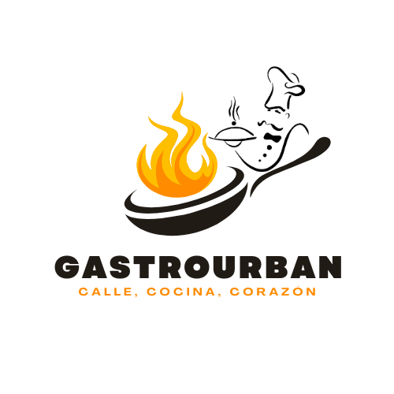
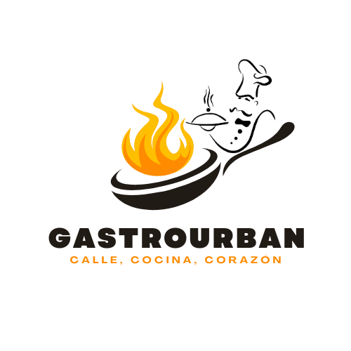

¿Quienes Somos?
Somos un restaurante urbano que fusiona la esencia de la cocina callejera con técnicas modernas y sabores auténticos. Nacimos en Alajuela con una misión clara: ofrecer comida con carácter, hecha al momento, para todos los gustos.
Somos un restaurante urbano que fusiona la esencia de la cocina callejera con técnicas modernas y sabores auténticos. Nacimos en Alajuela con una misión clara: ofrecer comida con carácter, hecha al momento, para todos los gustos.
